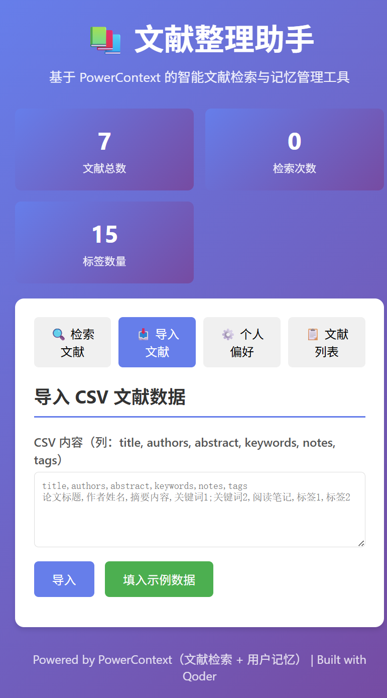
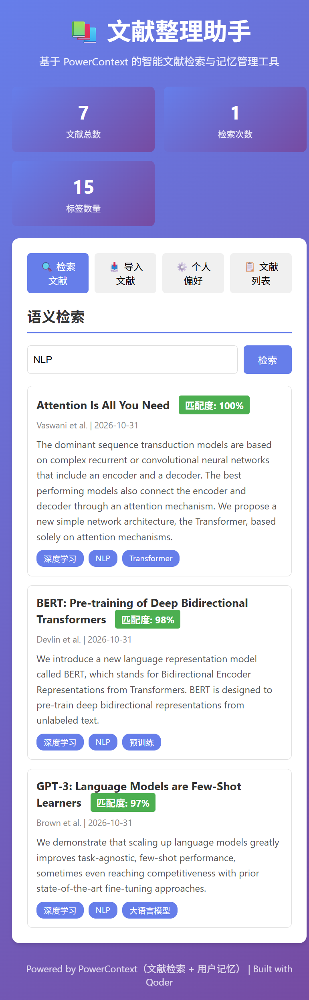
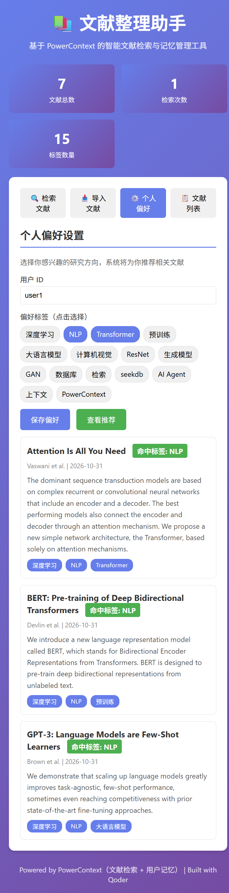

研究者的文献和偏好都散落在不同工具里，检索与推荐每次都要重新描述。
论文列表散落在表格和笔记里。本项目把每篇文献写入 PowerContext Memory，用统一接口做全文检索。
每次打开工具都要重新选择研究方向。本项目把偏好写进用户独立的 Scope，下次打开自动召回。
推荐不是写死的规则：先从 PowerContext 召回偏好，再用偏好标签检索文献库，形成可解释的推荐链路。
四个功能都围绕 PowerContext 的 Scope / Memory 展开，而不是外围的模拟逻辑。
导入的每篇文献都会调用 remember_memory 写入共享“文献库” Scope，类型为 paper。
检索调用 search_memory(mode="fts")，直接返回 PowerContext 命中结果，并按组内最高分换算相对匹配度。
每个用户 ID 对应独立 Scope，偏好以 preference Memory 保存，可随时召回并复现。
先召回偏好 Memory，解析出研究标签，再逐标签检索文献库，返回带命中标签的推荐结果。
项目选择 PowerContext 作为核心上下文与记忆组件（赛题要求 seekdb / PowerContext 至少其一）。 它通过进程内 ASGI + SQLite 运行，无需额外数据库或服务，不是只安装或只测试连接。
# backend/main.py await pc.remember_memory(RememberMemoryRequest( scope_id=state["library_scope"], kind="paper", text=title_and_abstract, )) hits = await pc.search_memory(SearchMemoryRequest( scope_id=state["library_scope"], query=query, limit=top_k, mode="fts", ))
PowerContext Server 以 ASGI 应用在应用进程内启动，数据落在本地 SQLite：
create_server_app() + httpx.ASGITransport + lifespan
sqlite+aiosqlite:///…/powercontext.db
因此单机一条命令即可完整体验检索与记忆，不需要 Docker、外部数据库或 API Key。
本项目的核心记忆与检索能力由 PowerContext 提供；seekdb 仅作为可选的后续生产存储方向，未参与当前功能流程。
以下为仓库内可复现的验证脚本真实输出（PowerContext 1.2.0）。
| 步骤 | 操作 | 预期结果 | 实测 |
|---|---|---|---|
| 1 | 导入 data/sample_papers.csv | 7 篇文献写入文献库 Scope | imported = 7 ✓ |
| 2 | 检索 NLP | 返回含 NLP 的文献与匹配度 | 3 条命中 ✓ |
| 3 | 保存偏好 [NLP, Transformer] | 偏好写入用户 Scope | memory revision = 1 ✓ |
| 4 | 重新读取偏好 | 从 PowerContext 召回偏好 | NLP, Transformer ✓ |
| 5 | 请求推荐 | 偏好记忆驱动文献检索 | 3 条推荐 ✓ |
[startup] PowerContext ready, search_modes=[auto, fts] [import] 200 imported=7 [search] 200 hits=3 [save prefs] 200 preferred_tags=['NLP', 'Transformer'] [recall prefs] 200 preferred_tags=['NLP', 'Transformer'] [recommendations] 200 Attention Is All You Need / BERT / GPT-3 [DONE] backend + PowerContext end-to-end OK
复现命令：python scripts/test_backend.py；另有
python scripts/verify_powercontext.py 单独验证记忆写入与召回。
以下截图来自本地真实运行的应用（非静态模拟）。



网站为静态展示页，完整功能在本地运行（PowerContext 需在 Python 进程中启动）。
# 1. 获取代码（分支基于 2026-competition-ecosystem） git clone -b qoder-competition https://github.com/orange179/powercontext.git cd powercontext/qoder/research-assistant # 2. 安装依赖（Python 3.11+，含 PowerContext 1.2.0） python -m venv .venv .venv\Scripts\activate # Windows # source .venv/bin/activate # macOS / Linux pip install -r requirements.txt # 3. 启动 python backend/main.py # 打开 http://127.0.0.1:8000 # 4. 可选：一键验证 PowerContext 链路 python scripts/test_backend.py
使用说明、API 列表与故障排查见仓库 docs/RUNNING.md。